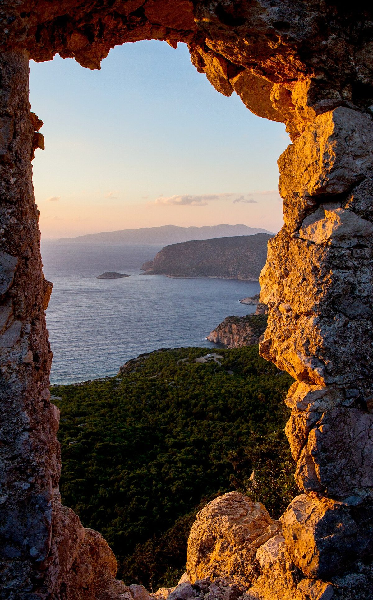

口コミ(イメージ例)
以下は実際のお客様の声ではありません。カフェの雰囲気をお伝えするために制作側が作成した、イメージ例です。
イメージ例
「海の近くの町で、ひと息つけそうな場所。ふらっと立ち寄りたくなる雰囲気です。」
※イメージ例です。実在の投稿ではありません。
イメージ例
「ゆっくり過ごしたい日に思い出したくなる、そんな落ち着いたイメージのカフェ。」
※イメージ例です。実在の投稿ではありません。
イメージ例
「散歩の合間に、ちょっと休憩。肩の力が抜けるような時間が流れていそうです。」
※イメージ例です。実在の投稿ではありません。
